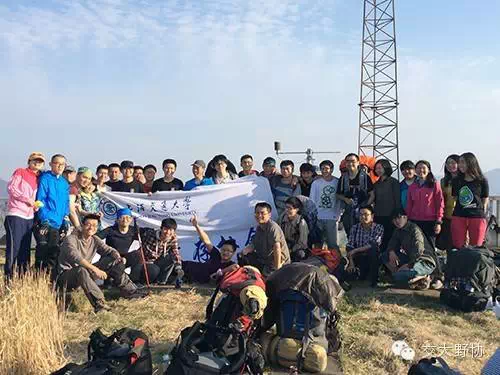

发信人: lvganyu (野协菌), 信区: outdoor
标 题: 五一黄金周，你还想宅在家里吗? (七尖、浙东）
发信站: 饮水思源 (2015年04月23日14:10:10 星期四)
screen.width - 200){this.width = screen.width - 200}">
旅行，不关乎方向，不关乎地点，只关乎你是否有走出去的决心。
攀登，山川被你征服
跋涉，不一样的风景
坚忍，挑战你的极限
不知各位同学是否对五一的黄金周期待已久呢？
你还想宅在家里，看看肥皂剧，打打游戏，虚度这几天的光阴吗？
不如趁着春暖花开，背起背包和我们出发吧！
在这里
你会结识一群热爱户外的朋友
在这里
你会爱上旅行的自由
在这里
你会收获意外的邂逅......
报名开始时间：
4月23日周四下午1点
截止日期4月27日晚18点
如果你热爱登山，热爱户外，并有一定的体能基础，那么这条线路一定适合你，号称华东
第二虐的“七尖穿越”
报名链接（微信扫描二维码识别）
screen.width - 200){this.width = screen.width - 200}">
screen.width - 200){this.width = screen.width - 200}">
 screen.width - 200){this.width = screen.width - 200}">
screen.width - 200){this.width = screen.width - 200}">
如果你是一个文艺青年，喜欢一些风景美好的圣地，但又不希望是商业景区，那么这条线
一定适合你，野外溯溪线——浙东大峡谷
screen.width - 200){this.width = screen.width - 200}">

报名链接：（微信扫描二维码识别）
screen.width - 200){this.width = screen.width - 200}">
screen.width - 200){this.width = screen.width - 200}">
加入野协，下载APP更能第一时间接收活动消息
http://www.yiqixxx.com/g/event/70/#rd
--
※ 来源:·饮水思源 bbs.sjtu.edu.cn·[FROM: 59.78.32.71]
|